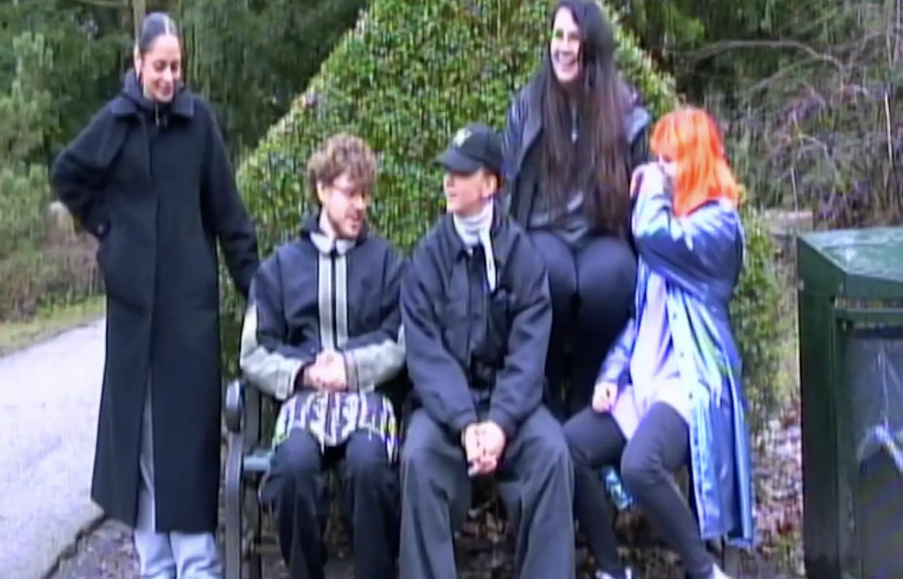
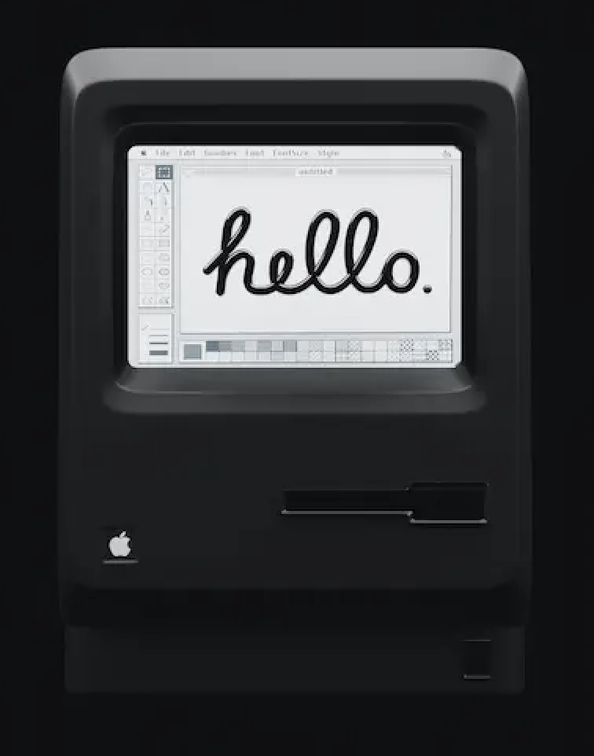

Portfolio
Denne side er mit portfolio, og her får du direkte adgang til mit digitale skrivebord, hvor du kan trykke rundt på mine forskellige mapper.
Hver mappe repræsenterer et tema, vi har arbejdet med på uddannelsens første semester og indeholder links til øvrige sider, jeg har kodet.
Hold musen over de forskellige apps i dockpanelet for at se applikationsnavnet, samt hvad jeg har brugt dem til.
Skub knappen til “On” for at tænde min desktop og gå på opdagelse.
Tema 1 – Introuge
I introugen startede vi med at præsentere os selv for holdet via et kort, vi hver især havde designet i Figma. Senere på ugen planlagde og udførte vi en introduktionsvideo i grupper.
- I grupperne drøftede vi idéer til vores titel-sekvens til introvideoen.
- Individuelt lavede vi et udkast til storyboard, skudliste og en handlingsbeskrivelse.
- Vi præsenterede herefter vores forskellige udkast for hinanden.
- Undervejs i processen sammensatte vi idéerne og producerede et fælles storyboard.
- Til sidst planlagde og gennemførte vi optagelsesdagen og redigeringen af introvideoen, som vi fremviste for resten af holdet.
Under ugen oprettede vi desuden en konto på one.com, vi fik domæne og blev introduceret til uddannelsens opbygning og studiestartsprøven.
 ▶Tema 2 – Grundlæggende web
Her blev vi introduceret for html, css, responsivt design samt grundlæggende webstruktur.
Vi lærte at lave forskellige typer links: både til undersider, eksterne hjemmesider og til steder på samme side.
Vi lærte at benytte validator.w3.org til online validering ved at indtaste vores projekters URL’er efter upload til domænet.
Derudover lavede vi mange HTML-øvelser og blev introduceret til CSS for at style vores websites.
Vi arbejdede også med designprincipper, uploadede vores sites til domænet, lavede designøvelser i Figma og oprettede konti i GitHub.
 Åbn computersite
Tema 3 – Grundlæggende UX/UI
I dette tema var fokus primært på brugeroplevelse, wireframes og designprincipper.
Projektet strakte sig over fire uger og bestod af fem centrale dele:
Først skulle vi lave grundig research og finde en idé til sitet, som både skulle være interessant for os og give værdi for brugeren.
Her samlede vi tekster, billeder og udviklede et første udkast til vores løsning, som vi også testede.
Dernæst arbejdede vi i Figma med at lave en digital, klikbar prototype.
Den skulle afspejle vores idé og designvalg og kunne testes af brugere, så vi kunne få feedback.
Efter prototypen gik vi i gang med at kode selve sitet i HTML, CSS og JavaScript.
Det skulle være en funktionsdygtig version med mindst tre sider, og det var vigtigt, at sitet fungerede både på mobil og desktop med et responsivt design.
Vi brugte blandt andet webfonte og favicon, og vi lærte at validere vores kode, så den var fejlfri.
Til sidst forberedte vi en kort præsentation, hvor vi fortalte om vores arbejdsproces, viste vores løsning og modtog feedback.
Samtidig dokumenterede vi hele forløbet i Figma, så vi kunne reflektere over, hvad vi havde lært.
Grundlæggende lærte vi, hvordan man går fra idé til færdigt website, både i design og udvikling.
Tema 4 – Grundlæggende animation
I dette tema dykkede vi ned i animationer og mere avancerede webteknikker, som JavaScript og SVG-grafik.
Vi startede med at arbejde med papir-prototyper og skitser, hvor vi planlagde visuelle virkemidler og infografik til vores projekter.
Herefter lærte vi at bruge Adobe Illustrator til at lave præcise grafiske elementer, som vi kunne eksportere og animere på vores websites.
Vi fik en grundig introduktion til JavaScript og lærte at arbejde med variabler, betingelser, arrays og funktioner gennem øvelser, som vi løste både individuelt og i grupper.
Derudover arbejdede vi med CSS-animationer og lærte teknikker til at tilføje animationer via klasser, hvilket gjorde vores sites mere interaktive og brugervenlige.
Vi brugte også forskellige værktøjer til at skabe stilfulde designs, blandt andet Style Tiles og dark mode-designs, som vi kunne teste og justere ud fra brugernes feedback.
Alt i alt var Tema 4 en spændende videreudvikling af vores digitale kompetencer, hvor vi kombinerede design og kode til at lave både visuelt flotte og teknisk avancerede websites.
Tema 5 – Grundlæggende indhold
I dette tema dykkede vi ned i grundlæggende indholdsproduktion med fokus på samarbejde i teams og udvikling af digitale løsninger.
Vi startede med en introduktion til temaet, hvor samarbejdskontrakter og konceptudvikling blev centrale elementer.
Vi arbejdede med konceptualisering af indhold og planlagde en "shoot"-dag til at skabe det visuelle materiale til vores projekter.
Vi undersøgte procesdokumentation, kravspecifikationer og forskellige eksempler på websites og animerede hero-sektioner for inspiration.
Vi fik introduktion til anvendelse af Lottie-animationer, som vi lærte at eksportere og implementere i vores projekter.
Temaet indeholdt også praktiske opgaver med fokus på SCRUM-metodologi og heuristisk evaluering af vores løsninger.
Til sidst reflekterede vi over vores arbejde gennem evalueringer og eksperimenter med præsentationsteknikker.
Alt i alt lærte vi, hvordan man arbejder professionelt med indholdsproduktion, samarbejde og digital udvikling.